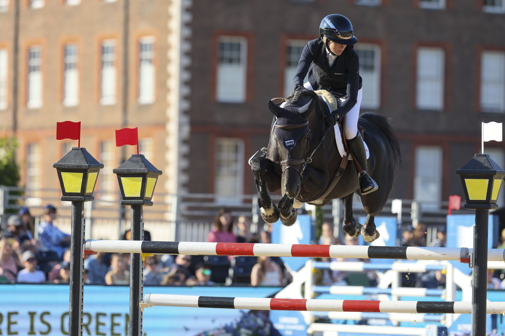

John Pérez Bohm gana la ATCO Cup 1,45 m del CSI2* Spruce Meadows con Lareusa S
El jinete colombiano John Pérez Bohm se ha impuesto este sábado en la ATCO Cup, prueba de 1,45 metros del programa CSI2* del Spruce Meadows National. Pérez Bohm firmó un crono de 38,60 segundos en cero a lomos de Lareusa S para colgarse el triunfo en una llegada muy ajustada.

Uso editorial
El jinete colombiano John Pérez Bohm se ha impuesto este sábado en la ATCO Cup, prueba de 1,45 metros del programa CSI2* del Spruce Meadows National. Pérez Bohm firmó un crono de 38,60 segundos en cero a lomos de Lareusa S para colgarse el triunfo en una llegada muy ajustada.
El segundo cajón del podio fue para la australiana Zoe Brown con Immer Fortuna, también sin penalización, en 39,26 segundos. La tercera plaza viajó a Canadá con Amy Millar y Christiano, que cerraron el podio en 39,88 segundos sin faltas. Los tres binomios completaron el recorrido en cero, separados por menos de un segundo y medio en una pista que premió la rapidez y la regularidad de monta.
La ATCO Cup forma parte del bloque CSI2 del Spruce Meadows National, el primer torneo de la temporada en el recinto canadiense de Calgary, que abre cinco semanas consecutivas de gran salto internacional. El concurso reparte puntos para el Longines Ranking en sus pruebas CSI5, mientras que el bloque CSI2* funciona como tramo de afinado para binomios y como escaparate para jinetes en construcción de palmarés internacional.
Pérez Bohm, ya conocido en el circuito americano por sus actuaciones con el equipo colombiano, suma un triunfo más a su temporada 2026 en un escenario de referencia. El sábado de Spruce Meadows completó el podio internacional con un cartel de tres países —Colombia, Australia y Canadá— y volvió a poner el foco en un torneo que en su jornada principal del domingo entrega el RBC Grand Prix de Canadá presentado por Rolex.
— Redacción de Hípica al Día